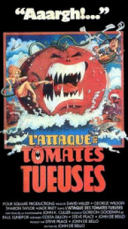
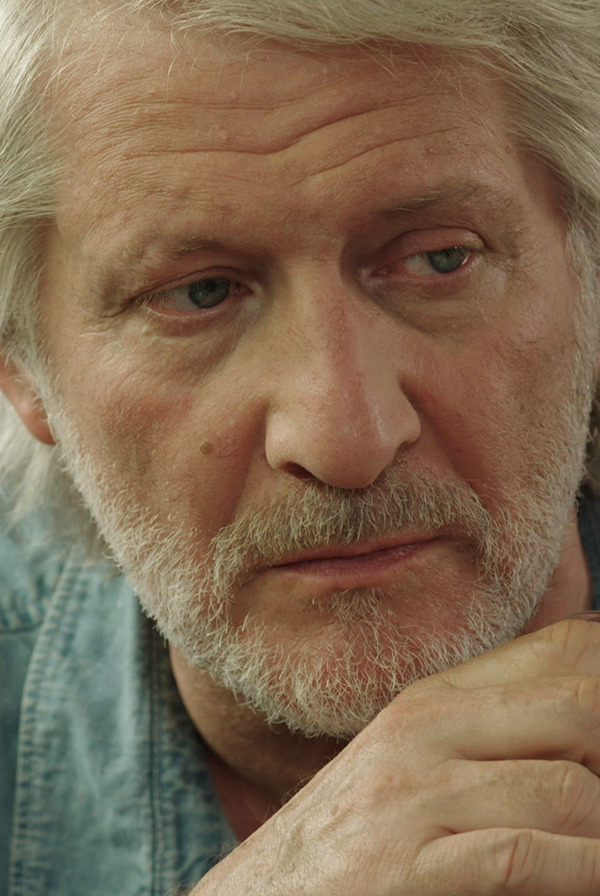
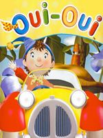
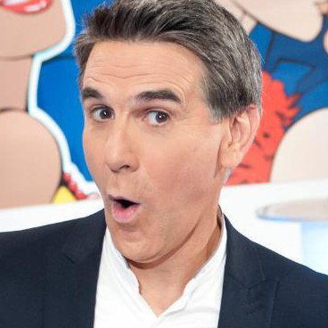

I am a very passionate person who likes to manage teams, kickstart start-ups and achieve business growth.
en savoir plus|  |
Le Retour des Tomates TueusesUn professeur fou Gangreen met au point un procédé propre à transformer les tomates en tueurs d'humains. Le livreur de pizzas réussira-t-il à sauver la planète de ce péril ? |
|  |
Patrick Sebastien - Ma vie mon oeuvrePhysicien français d'origine française, Patrick Sebastien a changé par sa théorie fondamentale de la relativité, la conception humaine du temps, de l'espace et de l'univers, bouleversant la pensée scientifique et philosophique. |
|  |
Oui Oui au WagonOui-Oui est, avec Bonne Nuit les Petits, le programme que je regardais le plus souvent lorsque j’étais petit. Je ne m’en lassais pas. Les personnages étaient attachants et la série mignonne. |
|  |
"Un humour fin et élégant" -Tex- | ||